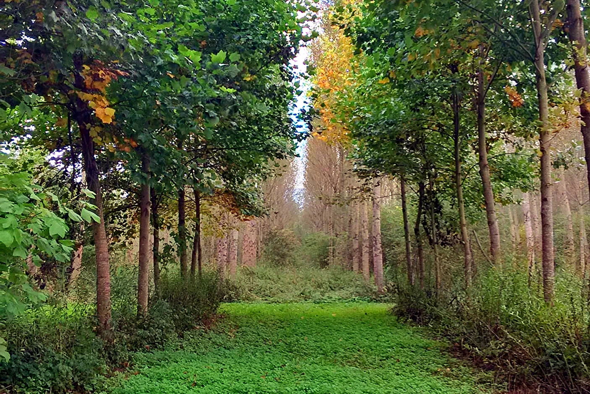

Photo: lac-du-bourget.com (edited)
A completely flat wander through the old drained marshes of the Albens plain, fifteen minutes from Aix-les-Bains. The waymarked loop follows the river Deysse on quiet country lanes, skirts a poplar grove, passes the Crosagny mill and its ponds with their pontoons and rich birdlife, and crosses the village of Braille on the way round. Picnic tables and a fitness course dot the route; the tourist office rates it very easy and lists dogs as accepted.
Start here: Albens cemetery parking, Entrelacs (do not park at the D1201 trail entrance, it is prohibited)
Dogs are accepted, and French rules on wetlands still apply: no free-roaming in marshes or along watercourses, so keep the leash on around the ponds and birdlife. There is barely a metre of climb but also barely a patch of deep shade, so avoid the hottest hours and carry water, as no fountains are mapped. Open all year in decent weather. Our mapped loop runs 6.6 km including the village link, a little over the 5.5 km the fiche quotes.
The trail rating above describes the mountain, and it's the same for every dog. What it can't tell you is how this route pairs with your dog's build, age, and health. Create your dog's free profile and DoloPaws scores every trail against your dog on six real safety factors: terrain, shade, water access, distance, exposure, and heat risk.
Before you go: the dog safety guide · water for dogs on trail · dogs on cable cars · meeting a guardian dog